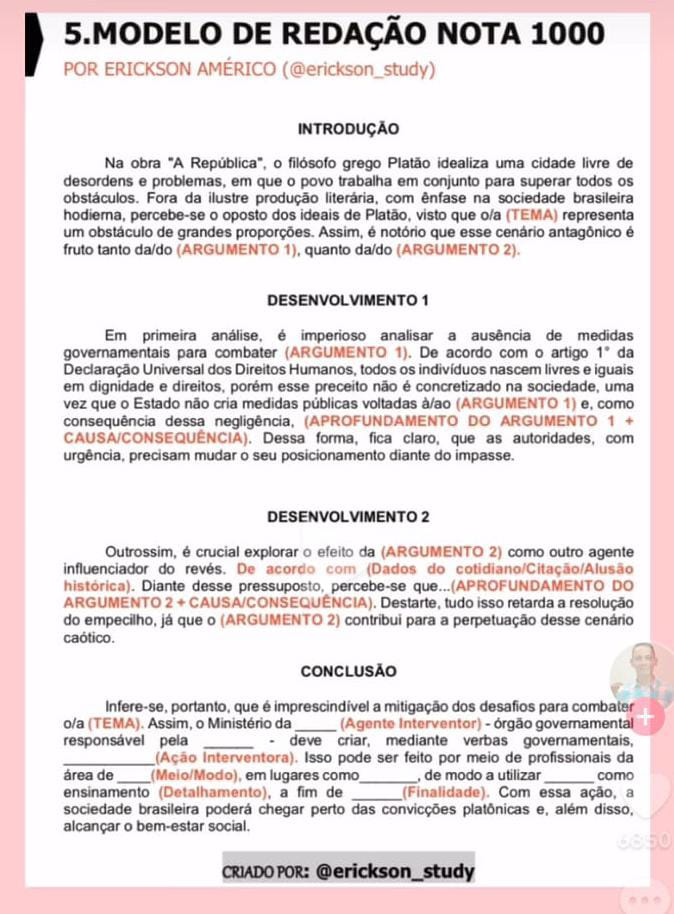
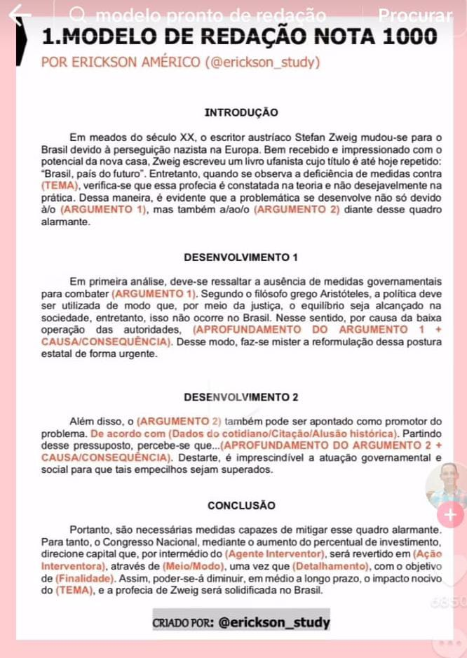
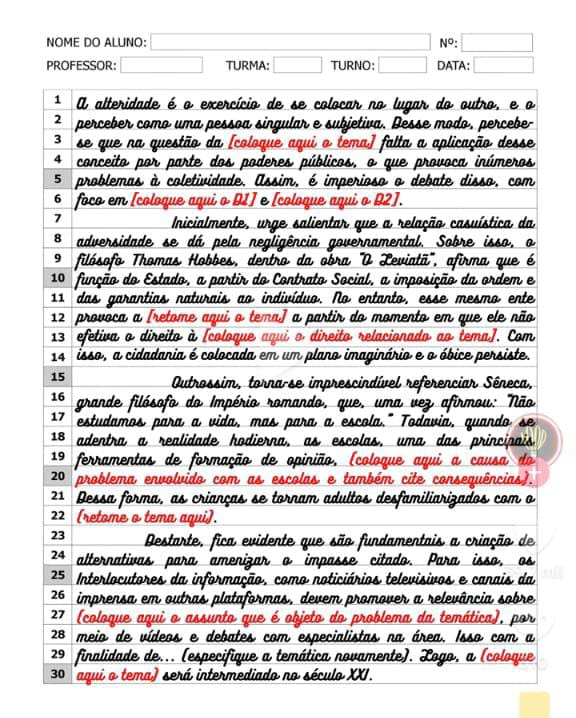
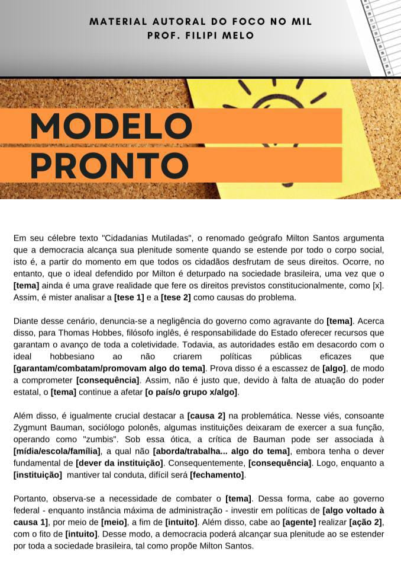

Modelos Prontos
Para quê serve o modelo pronto?
Como utilizar
Prós e contras
Para quê serve:
Um modelo pronto de redação do Enem pode ser uma ferramenta útil para os estudantes que estão se preparando para o exame, mas é importante utilizá-lo com cautela e sabedoria. Ele serve principalmente para:
- Estrutura: Apresenta uma estrutura básica da redação, com introdução, desenvolvimento e conclusão, facilitando a organização das ideias;
- Linguagem: Exemplifica o uso de uma linguagem clara, objetiva e formal, adequada ao gênero textual dissertativo-argumentativo;
- Argumentação: Mostra como construir argumentos coesos e coerentes, utilizando dados, fatos e exemplos para sustentar suas opiniões;
- Coesão e Coerência: Demonstra como utilizar elementos coesivos para garantir a fluidez e a lógica do texto;
- Inspiração: Pode servir como ponto de partida para a criação de suas próprias redações, estimulando a sua criatividade e originalidade.
No entanto, é fundamental ressaltar que:
- Não é uma receita mágica: Um modelo pronto não garante a nota máxima. É preciso adaptar o modelo ao tema proposto e desenvolver uma argumentação própria;
- Serve como guia: O modelo deve ser utilizado como um guia, e não como um texto pronto para ser decorado.
Como utilizar um modelo pronto de forma eficaz:
- Entenda a estrutura: Analise a estrutura do modelo e identifique as partes que compõem cada parágrafo;
- Adapte ao tema: Modifique o modelo para que ele se encaixe perfeitamente no tema da sua redação;
- Desenvolva sua argumentação: Utilize o modelo como base para construir seus próprios argumentos, utilizando dados, fatos e exemplos relevantes;
- Revise e corrija: Após escrever sua redação, revise-a cuidadosamente para verificar se há erros de gramática, ortografia e pontuação.
Prós e contras
Prós
- Inspiração e Estrutura: Modelos prontos podem servir como uma excelente fonte de inspiração, ajudando você a entender como estruturar sua redação e desenvolver argumentos de forma coerente;
- Conhecimento das Competência: Ao analisar redações nota 1000, você pode identificar como os candidatos atenderam às cinco competências exigidas pelo Enem, como domínio da norma culta e elaboração de propostas de intervenção;
- Economia de Tempo: Ter um modelo como referência pode acelerar o processo de escrita, especialmente se você estiver com pouco tempo para estudar.
Contras
- Risco de Plágio: Usar modelos prontos pode levar ao plágio, mesmo que não intencional. É importante garantir que seu texto seja original e reflita suas próprias ideias;
- Falta de Autenticidade: Seguir um modelo pode limitar sua criatividade e originalidade, resultando em uma redação que não se destaca entre as demais;
- Dependência Excessiva: Confiar demais em modelos prontos pode impedir que você desenvolva suas próprias habilidades de escrita e argumentação, essenciais para o sucesso acadêmico e profissional a longo prazo.



